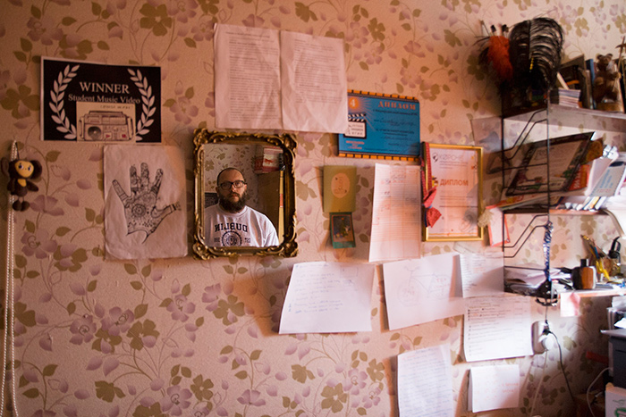
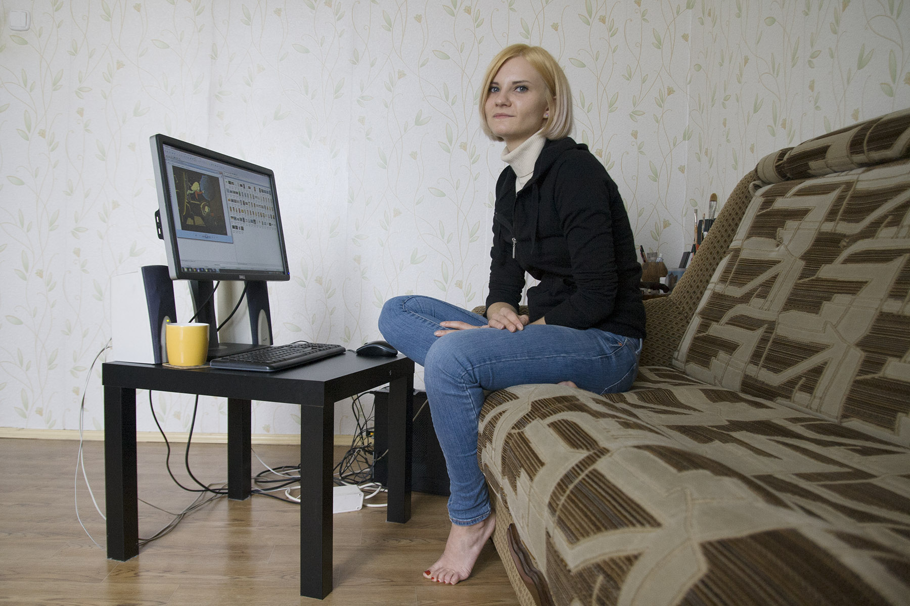
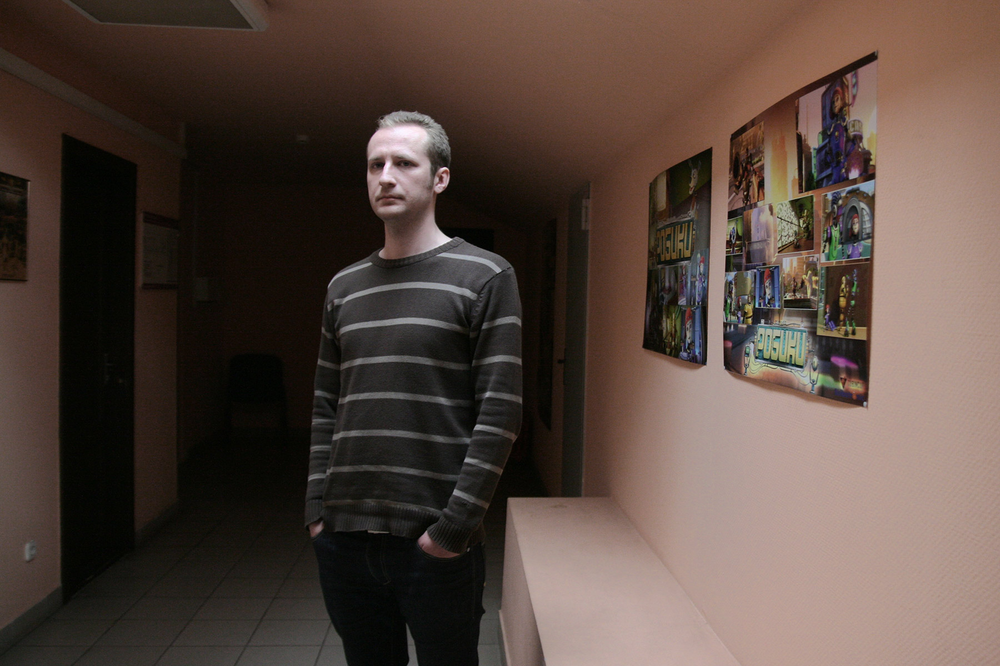
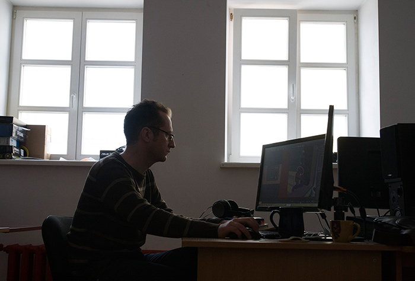
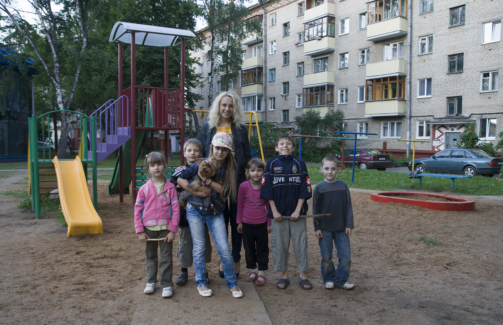
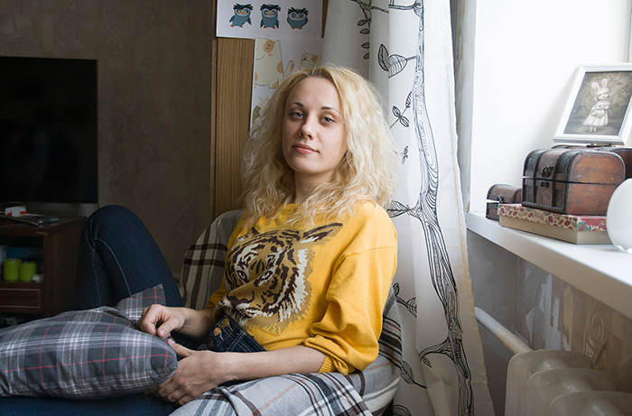
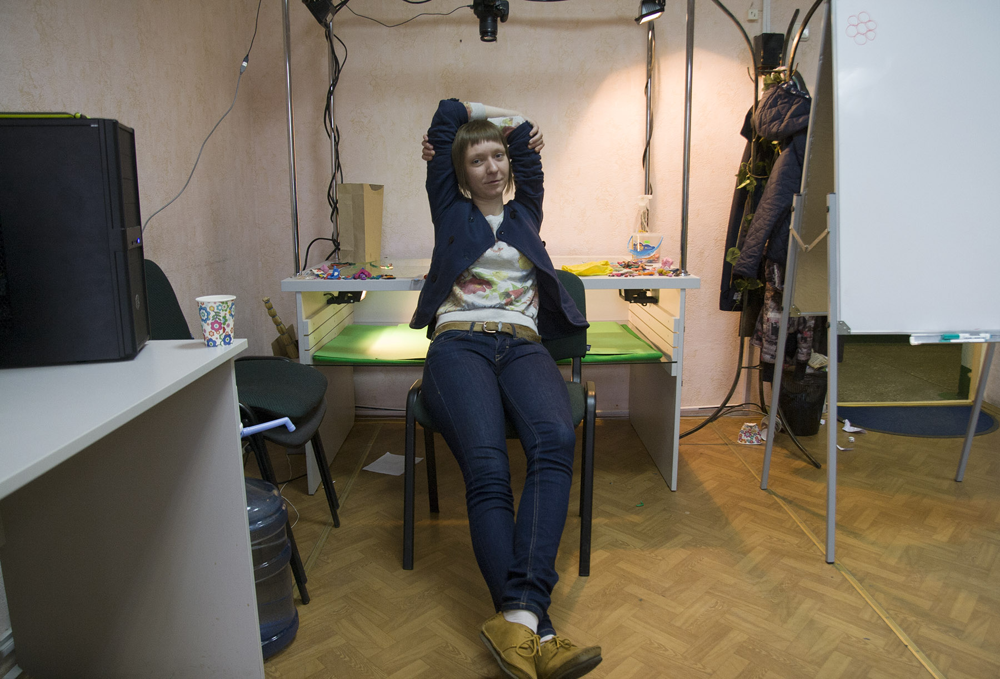
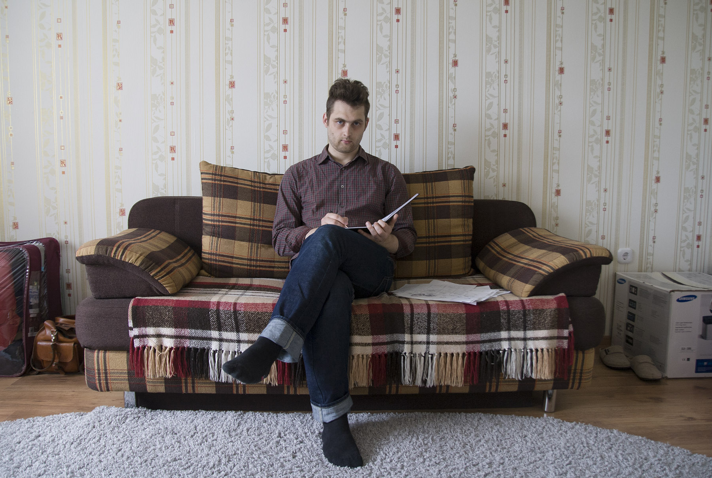
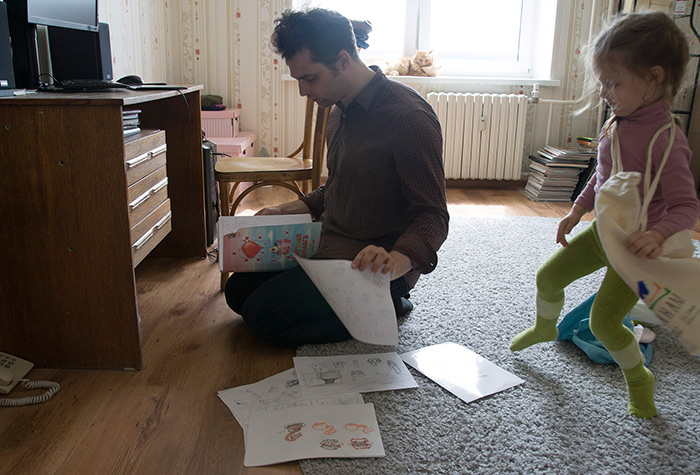
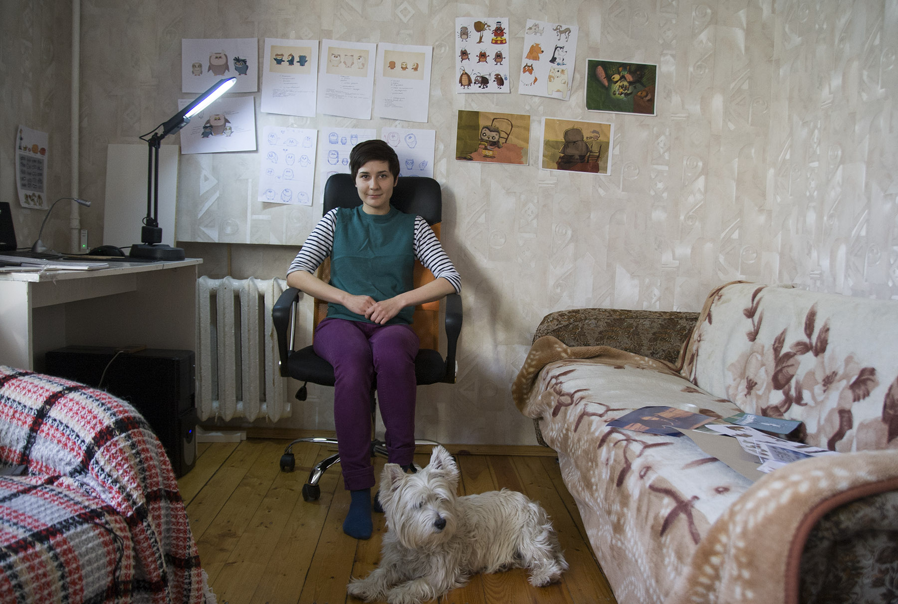

В нашей стране есть собственная киностудия — «Беларусьфильм»: осколок мощного когда-то централизованного советского кинематографа. Национальное кино, безусловно, престижно, но сегодня поводов для гордости мало. Основные производственные мощности киностудии используются для бюджетных телевизионных сериалов. Художественные картины выходят 1-2 раза в год, о них забывают через месяц после премьеры и отправляют на полку.
В анимационном цеху ситуация другая: каждый год беларуские мультфильмы участвуют в международных конкурсах и фестивалях, часто получают призы. Речь не только о близких соседях (РФ, Украина и Польша), география значительно шире: от Японии до Португалии. Лувр, например, недавно включил в детскую программу цикл фильмов «Сказки старого пианино», созданный на «Беларусьфильме» (анимационный проект, посвящённый великим композиторам. Режиссёры Елена Петкевич, Владимир Петкевич, Юлия Титова, Ирина Кодюкова).
Мало кто знает, что беларуские аниматоры задействованы в крупных проектах других стран, к примеру, в российской «Горе самоцветов». А в самом начале лета состоялась премьера нового, японского «Чебурашки», где художником-постановщиком работал беларус Михаил Тумеля. Помимо Японии, Тумеля работал в Сеуле, Портленде, Будапеште, Москве. Знаменит он, конечно, не только этим: десятки наград, среди которых российская «За вклад в мировую анимацию». В последние годы мультипликатор реанимировал старинную народную технику «выцінанку-выразанку» и использует её в своих работах, создаваемых и на «Беларусьфильме» в том числе.
Сегодня дешёвые камеры позволяют делать кино практически любому, и такие фильмы регулярно становятся популярными (самый известный пример — навязшая на зубах «Ведьма из Блэр»). С анимацией так не получится, и дело не только в хронической нехватке денег «на культуру». Снять полный метр можно за месяц, для серии типичного русского «мыла» нужен всего один день, а в анимации 5 минут — это полгода кропотливого труда. Распространённый мультипликационный формат — 15-20 минут, полнометражные мультфильмы — могут создавать только крупные студии. Но все эти трудные аскетичные условия не мешают старшему поколению беларуских аниматоров.
Мы решили поговорить с теми, кто придёт им на смену. Белорусская академия искусств в 2008 году возобновила подготовку режиссёров анимационного кино. Год назад случился первый выпуск после почти двадцатилетнего перерыва. Что за люди выбирают эту профессию и почему? Что произошло с ними за год самостоятельной жизни? Какие у них планы и перспективы?
Случайно, по телевизору увидел, что проводится набор. Жил тогда в Мозыре, я оттуда родом. Работал в магазине бытовой техники. К тому моменту я закончил местный педагогический университет, который готовит кадры для сельской местности. Вот и перспективы были именно такие: либо работать в школе, либо на вольные хлеба.
Кто такой режиссёр, что такое анимация, я, конечно, не представлял. Я много рисовал, но художественного образования у меня нет. Немножко книги иллюстрировал, немножко работал с поздравительными открытками, но особых возможностей для самореализации не видел. Я несколько раз съездил на консультации в Академию искусств, впечатлился, захотелось этим заниматься: картинки двигать, одушевлять их. К централизованному тестированию подготовился за месяц, хотя через 7 лет после школы про это даже думать было тяжело. Удачно всё сложилось, в общем, поступил.
И какие впечатления были от Академии?
Самые первые впечатления были очень хорошие. Мне было 26, и я фактически в первый раз из глубинки в Минск приехал. А тут «дух» Академии, эти огромные скульптуры при входе, люди в трико, знакомство с моими будущими одногруппниками, с нашим мастером. Мы учились в главном корпусе, с актёрами и другими ребятами, было весело и интересно, такая атмосфера единения присутствовала. Постоянно хотелось что-то делать, творить. Сейчас всё немного не так уже.
А как сейчас? Ты уже не чувствуешь этого единения?
Да нет, просто студенческие годы закончились, когда ты был постоянно в центре какой-то движухи. С одногруппниками мы не теряем связей: постоянно общаемся, делимся опытом, пьём чай, гуляем. Это влияет на творчество, то есть я в себе не замыкаюсь. Мне нужно общество, потому что я не одиночка. Работа тоже требует общения, взаимодействия с незнакомыми людьми. Я не хотел бы работать сам, без команды. Одному всё делать тяжело. Да, иногда я и художник и аниматор, но считаю, что должно быть разделение трудаНад мультфильмом должна работать целая команда: художник по персонажам, художник по фонам, художник-мультипликатор (аниматор, создаёт фазы движения и объединяет их, заставляя персонаж двигаться), художник-постановщик («главный» художник, определяет стиль фильма), компоузер (тот, кто собирает всё вместе), звукорежиссёр. И всеми управляет режиссёр. В наших реалиях функции часто размыты или пересекаются.. А то, что я сейчас работаю дома — это обстоятельства такие.
Есть что-то, что ты поменял бы в Академии искусств, в процессе обучения?
Я считаю, со стороны Академии было мало внимания к преподавательскому составу. Наши мастера взяли на себя обязательства перед своей совестью, если хотите, доучить нас до конца. И сделали это, как бы тяжело им ни было. Дело не только в том, что они работали за гроши — материально-технической базы практически не было. Нам постоянно обещали купить оборудование, но этого так и не произошло. Говорят, прошлому выпуску аниматоров было ещё хуже. Но всё равно — это не дело.
Что было после окончания, когда пришло время самостоятельно искать проекты, работу?
Ещё когда делал диплом, мне предложили работу на «Беларусьфильме». Там есть проект «Гербы», коротенькие фильмы, каждый год выходят. Было интересно над ним поработать, проверить силы в качестве режиссёра. А параллельно я что-то ещё искал. Услышал, что в Москве на студии «Союзмультфильм» нужны молодые специалисты. Пообщался с художественным руководителем, отправил заявку, её одобрили. Над этим проектом сейчас и работаю. Это небольшой (2.5 минуты) мультфильм. Если всё хорошо и быстро сделаю, предполагается, что предложат следующий проект.
Аним. фильм «Бобруйск» из проекта «Гербы». Режиссёр: Руслан Синкевич.
Перспективы у меня только на этот год. Всё, что касается последующего времени — я не знаю, что будет… Все «наши» (одногруппники — Прим.ред.) так или иначе заняты в профессии, но режиссируют не все. Не то чтобы я очень серьёзный режиссёр, мне отчасти повезло. Ну и больше смелости надо: мне не зазорно лишний раз позвонить, спросить, а кто-то стесняется.
А как с деньгами: на жизнь тебе хватает? Или ещё где-то подрабатываешь?
На данный момент я работаю только с «Союзмультфильмом», нет времени заниматься чем-то ещё. Но у меня не слишком высокие запросы и потребности, пока на жизнь хватает. Вообще, жить на одну зарплату режиссёру трудно, все, кого я знаю, подрабатывают: ведут мастер-классы, учат, работают аниматорами или иллюстраторами. Думаю, если меня вдруг прижмёт, я тоже легко смогу включиться.
Твои последние работы (диплом, работы на «Беларусьфильме» и «Союзмультфильме») выполнены в пластилиновой технике. Расскажи, почему ты остановился именно на ней?
Пластилин как материал я никогда не любил. Сейчас-то понимаю, насколько он интересный и самобытный. Знакомая работала художником-постановщиком на студии «Пилот», завела на экскурсию. Меня впечатлило: огромные кучи пластилина, все бегают увлечённые. На тот момент у нас с Мариной Лукьяновой уже шла полным ходом подготовка диплома, хотели делать рисованный мультфильм. А я вернулся из Москвы, взбудоражил её, убедил, что пластилин — это классно и интересно. Короче, переделали-передумали мы наш диплом, сделали сами анимационный станок. Академия не помогала. Тут такое дело: либо ты очень хочешь чем-то заниматься и делаешь, либо жалуешься на всех и вся. И пластилин победил! Может он мне надоест, но пока очень нравится: делай что хочешь, лепи что хочешь, превращай и т.п.
Аним. фильм «Синяя собака». Дипломная работа Руслана Синкевича и Марины Лукьяновой.
Специальное упоминание жюри на фестивале «КОРОЧЕ» (Калининград), «Лучшее студенческое музыкальное видео» на фестивале FAM fest(Южная Каролина), участник фестивалей Libélula (Барселона), Early Bird (София), «Мультивидение» (Санкт-Петербург), ZubrOFFka (Белосток), «Кинопроба» (Екатеринбург), «ШОРТЫ» (Тула), Cinema Perpetuum Mobile (Минск), участник Международного кинофестиваля ВГИК и Открытого российского фестиваля анимационного кино (Суздаль).
Ты чувствуешь себя продолжателем анимационных традиций?
Об этом я не задумывался. На фестивалях чувствуется нечто подобное. Вначале чувствуешь робость перед всеми этими маститыми режиссёрами, а потом оказывается, что они адекватные люди, поддерживают нас, указывают на технические или творческие ошибки. Сергей МериновРоссийский режиссёр-аниматор, работает в основном в пластилиновой технике. Youtube. даже сказал: на вас, мол, последняя надежда, молодцы, что продолжаете заниматься пластилиновой анимацией. И практически все знают, что в Минске выпустилась наша группка аниматоров. В этом, я думаю, большая заслуга нашего мастера — Тумели Михаила Брониславовича. Он ведь известный человек в анимационных кругах.

Фото: Юля Волчёк
Расскажи о своих ориентирах в творчестве.
Пожалуй, в данный момент это Ник Парк и Сергей Меринов. Ну и стараюсь идти в ногу со временем, смотреть молодых режиссёров. Столько всего появляется, каждый день новые техники, ответвления. Словом, останавливаться на пластилине я не хочу.
Скажи, тебе важно быть именно беларуским режиссёром, работать здесь?
Я просто хочу снимать кино, для меня важно работать, не застаиваться. Я бы хотел, чтобы наша группа самоорганизовалась и мы устроили студию. Эти мысли есть у всех, но до конкретики пока не доходит. Я бы хотел именно так работать: среди молодых независимых беларуских аниматоров.
Оля Вахонина

Фото: Юля Волчёк
Почему решила заняться анимацией?
В детстве я любила мультики, картинки рисовала. Родственница работала в Академии искусств, рассказывала, что там учат на режиссёров-мультипликаторов и говорила: «Вот вырастешь — поступишь». А это как раз последний выпуск аниматоров был перед долгим перерывом. Так что когда я выросла, поступила в архитектурный колледж. А когда заканчивала, объявили новый набор на анимацию. Я долго не думала, к архитектуре душа не лежала.
Если сравнивать с архитектурным колледжем, что тебя удивило в Академии?
Да всё! Нам с первого курса говорили, что режиссуре научить нельзя, можно только на примерах понять. Вот нам и не преподавали так декларативно, как везде. Скорее, делились опытом. Сама атмосфера нас учила.
Расскажи про свой диплом.
Мне всегда нравилась ночь, поэтому главный герой — Сова. Ребёнок просыпается совёнком вместо человека. «Превращение» Кафки напоминает, только для детей. Сюжет получился о воспитании, индивидуальности и отношениях родителей и детей.
Аним. фильм «Совёнок». Дипломная работа Оли Вахониной.
Что было после окончания, когда пришло время искать работу?
Поработала немного на «Беларусьфильме». А сейчас работа не связана с анимацией. Конечно, хочется заниматься именно режиссурой. Я бы и просто аниматором, художником-постановщиком с удовольствием работала, но это всё равно не то: чужие мысли, чужие идеи воплощаешь. Главная проблема сейчас — куда себя деть. У нас — почти некуда. Надо собираться с духом, отправлять заявки на фестивали, знакомиться, узнавать. Наверное, на Россию нужно ориентироваться, она нам ближе и творчески и ментально. И анимационная сфера там развивается. (За время подготовки материала мультфильм Оли Вахониной отобрали для участия в фестивале в Гамбурге и включили в каталог для прокатчиков. — Прим. ред.)
Какое направление в анимации тебе интересно? В какой технике хочешь работать?
С первого курса все пытались уйти в философию и тоску, а преподаватели пытались вернуть нас в детское. В итоге пришли к осознанию, что мы для детей работаем. Всем это понравилось. Не тот ещё возраст у нас для философии. Может, потом. Техника — я влюбилась в перекладкуТехника, в которой персонажей разрезают на части, чтобы легко ими манипулировать. Мультипликатор «оживляет» персонаж, двигая его части тела покадрово. В этой технике создано огромное количество мультфильмов: от «Ёжика в тумане» до "South park"., в ней можно сделать что угодно. Если заниматься куклой, например, это съедает всё время и больше ни на что не остаётся энергии.
Есть у тебя творческие ориентиры: важные имена, работы?
Миядзаки — волшебный, добрый, живописный. И, конечно, Норштейн.
Ты чувствуешь себя частью нового поколения беларуских аниматоров, продолжателем традиций?
Я почувствовала это на финальном показе дипломов в кинотеатре «Победа». Все тогда поняли, что у нас есть что-то общее. И от наших мастеров многое взяли: у кого-то в режиссуре, у кого-то в художественном плане. Но рано делать выводы, мы слишком мало сделали, чтобы говорить о тенденциях. Главное, чтобы никто не ушёл из анимации.
Что можно сделать, чтобы помочь развитию анимации в Беларуси? Господдержка, продюсеры — что?
Это было бы прекрасно. По-хорошему, нам (одногруппникам — Прим. ред.) надо бы собраться и организовать студию. Мы же хорошо знаем слабые и сильные стороны друг друга.
А почему вообще анимация важна для тебя?
Это даёт больше радости, чем жизнь вокруг. В мультфильме ты можешь другой мир построить, в любые цвета его раскрасить. Свои мечты, мысли, сны — что угодно реализовать. Когда книжку читаешь, всё равно ведь додумываешь, хочешь своё внести. А тут — пожалуйста. Анимация в любом случае будет в моей жизни. Её нельзя бросить, от неё невозможно уйти. Всё равно совесть будет мучить, сны, будешь смотреть чужие работы и страдать, потому что это как наркотик: подсаживаешься на неё, как на возможность сотворить.
Олег Торбик

Фото: Юля Волчёк
Как ты попал в анимацию?
Тяга к рисованию всегда была, но художественных школ я не заканчивал. Закончил БГПУ им. М. Танка по специальности «преподаватель истории и английского языка». Год работал по распределению в 1-й гимназии в Слуцке. Случайно узнал про набор художников-мультипликаторов на «Беларусьфильм». Сунулся, не попал. Вскоре был набор в Академию искусств, и я поступил. Руководство гимназии пошло навстречу, и мне удалось совместить второй год распределения и первый год учёбы. Нужно заниматься тем, что нравится, стремиться к мечте. Есть такая поговорка: везёт тем, кто везёт.
Какие остались впечатления об Академии?
Перестраиваться после БГПУ было тяжело. С одной стороны, анимация требует усидчивости и железных нервов, иногда педантизма. Первичного запала для создания продукта не хватает. С другой — мы всё время находились «между молотом и наковальней» наших любимых мастеров: между практицизмом Тумели и поэзией Петкевич. Могу сказать, что я вырос, сформировался благодаря этому. У нас была очень дружная, гармоничная группа. В общем, только с радостью вспоминаю Академию.
Что было после окончания учёбы?
На прикладную анимацию всегда много заказов, но мне не хотелось хвататься за лёгкую работу: рекламу, мелкие проекты на «Беларусьфильме». Первое время я преподавал в Центре технического творчества учащихся. Потом пригласили в Академию искусств читать курс по классической анимации. Сейчас я работаю в анимационной студии «Cubincup», мы делаем первый беларуский 3D-сериал «Робики».

Фото: Юля Волчёк
У меня всё по плану обычно, стараюсь на год-два вперёд смотреть. Так что хочу ещё год поработать в команде с ведущим аниматором, перенять опыт. Считаю, любому молодому аниматору нужно поработать в индустрии, чтобы стать профессионалом. Коммерция меня не смущает. За это время я сделаю «денежную подушку», чтобы уйти в свободное плаванье — создать собственный проект.
Расскажи тогда, какая анимационная техника тебе интересна, что за проект ты планируешь.
У всех техник своя пластика и природа. Перекладка имеет огромный потенциал, в трёхмерной анимации есть много интересных фишек. Даже «глюки» программ можно использовать. Но я убеждён, что аниматор должен в первую очередь работать руками, а не на компьютере рисовать. Диплом у меня был рисованный, стилизованный под японскую графику. Много раз менялась тема, как это обычно бывает. Сказка о молодильном озере мне по жизненным обстоятельствам оказалась близка.
Аним. фильм «Молодильное озеро». Дипломный проект Олега Торбика.
«Лучшее художественное решение» на фестивале One Short Film Fest (Минск), участник Международного фестиваля-практикума киношкол «Кинопроба» (Екатеринбург).
Но величайшей техникой для меня является кукольная анимация. Древнейшая техника, восходящая к марионеткам, театру теней, театру масок. Она предполагает самое глубокое изучение объекта, его понимание. Этого я и хочу: отказаться от реализма, сосредоточиться на объекте. Так что я мечтаю сделать кукольное кино собственными силами. Технические ресурсы у меня есть, историю тоже уже присмотрел — античную. Нужно только время.
Для кого бы ты хотел работать: для взрослых или для детей?
Для взрослых. Хочется с философскими смыслами работать.
Расскажи об ориентирах в творчестве. Кто тебя вдохновляет?
Многие авторы вдохновляют. Если рисованное кино — Прийт ПярнЭстонский аниматор, склонный к гротеску и чёрному юмору. Подробнее., он просто умница. Шванкмайер нравится, братья КвейАмериканские режиссёры, братья близнецы, продолжающие традиции европейского экспрессионизма и сюрреализма в кино и в анимации. Статья на Wikipedia. — мечтаю посетить их студию. Пол Дриссен — пример независимого подхода и единства стиля. Норман Макларен — классик и большой экспериментатор. Коджи Ямомуро — смог объединить японскую и европейскую анимационные традиции. Хитрук и Норштейн, конечно.
Ты чувствуешь преемственность поколений? Считаешь себя частью анимационной традиции?
Мне сложно говорить о преемственности: мало времени прошло, рано делать выводы. К советской анимационной школе привязки я не чувствую. Единственным мостом были Елена Вячеславовна Петкевич и Михаил Брониславович Тумеля, наши мастера. Они блестящие ученики своей эпохи. А «Беларусьфильм» никогда не был для меня показателем. Смущает некий вакуум, локальность, консервация. Можно же национальную историю рассказать так, чтобы всем было интересно, а часто получается: мы собрались, сняли что-то для себя, положили на полку. Я таким заниматься не собираюсь.
А частью нового поколения аниматоров ты себя ощущаешь?
Вряд ли. Я не слежу за модой, всегда был аутсайдером в этом смысле. Я хочу остаться самим собой. А с нашей группой у меня единство прежде всего на межличностном уровне. Но здесь как и с предыдущим вопросом. Считаю, десять лет должно пройти. Когда у всех появится какая-то фильмография, тогда и можно будет делать выводы.
Что ты думаешь о состоянии беларуской анимации? Что можно сделать для развития? Вот «Беларусьфильму» постоянно урезают финансирование...
Ситуация неоднозначная. Иногда нужно разрушить ветхое здание, чтобы на его месте выросло новое. Но и поддержка государства нужна, потому что не все могут заниматься коммерцией. Вот наша Елена Вячеславовна — художник. Без поддержки, без системы продюсирования она не справится.
В начале карьеры сделать фильм самому — это нормально, я считаю. Если человеку нужно высказаться, он сделает кино, чего бы это ни стоило. Только без финансирования сроки растянутся. Конечно, это путь бесстрашных, путь самурая. Сила воли нужна. Когда на кого-то работаешь, регулярно получаешь деньги, очень легко в этой зоне комфорта зависнуть.
Но я верю, что из энтропии можно создать греческий космос. Вряд ли беларуская анимация в ближайшие 50 лет выйдет на мировой уровень, но постсоветское пространство мы сможем удивить — это точно!
Настя Хотько

Фото: Юля Волчёк
Почему ты решила заняться анимацией?
Сначала я даже не имела понятия о том, что такое анимация! Но с детства любила творить. Не важно: петь, рисовать, сочинять стихи, просто фантазировать. И профессию хотелось выбрать такую, которая даст возможность реализовать все мои способности. Когда поступала в Академию искусств, я не представляла, что мир анимационного кино такой огромный и интересный. Для меня быстро стало очевидно, что я буду режиссёром и никем другим! Мой папа — художник, поэтому одобрил мой выбор. А мама — бухгалтер с 30-летним стажем, ей было сложно принять новость о том, что дочь решила посвятить себя искусству, но сейчас у нас всё хорошо.
Какие впечатления остались от Академии?
Академия — эпицентр творчества, таланта и искусства. Все это должно быть в крови, этому невозможно научиться, прочитав пару книг. У нас были замечательные преподаватели, которые не просто «натаскивали» нас на использование всем известных приёмчиков, но старались в каждом воспитать личность и раскрыть индивидуальность. Одной из главных целей нашего обучения было избавление от шаблонов и штампов, умение мыслить свободно.
Что было после окончания?
Некоторое время я ничем не занималась, был страх начать что-то самой, что не хватит сил или таланта сделать что-то стоящее. Это ведь огромная ответственность перед зрителями! Только через месяца три я поняла, что готова к самостоятельной работе. Теперь делаем с Мариной Лукьяновой анимационный сериал для детей 3-6 лет.
Для кого бы ты хотела работать: для взрослых или для детей?
Для детей. Правда, понимание этого пришло не сразу. Сейчас не так много качественных и добрых мультфильмов. Мне хочется делать искренние детские мультфильмы, ведь дети — наше будущее. От того, на чем они воспитываются, зависит дальнейшая жизнь. Пускай это будут красивые анимационные работы, а не жестокие компьютерные игры.
Какая анимационная техника тебе интересна?
Мне нравятся все техники, но не все финансово доступны. Диплом я делала в технике компьютерной перекладки, а чтобы получилось живо и интересно, использовала стилистику «выцінанкі-выразанкі», в которой работает наш преподаватель Михаил Брониславович Тумеля. Компьютер, бумага и ножницы — это всё, чем я пользовалась для создания диплома. Результатом довольна, техника придала фильму лёгкость и необычность.
Аним. фильм «Аднойчы ўзімку». Дипломный проект Насти Хотько.
Что думаешь о преемственности в анимации? Чувствуешь себя продолжателем художественной традиции?
Мне страшно, что мощная советская школа может исчезнуть. В Беларуси создаются хорошие мультфильмы, но их почему-то нигде не показывают. Не знаю, в чём дело. Я стараюсь придерживаться традиций. Конечно, техника развивается и нововведения необходимы, но это стоит делать очень аккуратно.
Назови, пожалуйста, несколько режиссёров, на которых ты равняешься.
Нас учили классической анимации. Мы все любим Петрова, Назарова, Хитрука, Норштейна и должны у них учиться, но главное — искать собственный стиль. Я бы хотела, чтобы мои работы трогали зрителей, не оставляли их равнодушными.

Фото: Юля Волчёк
Ты считаешь себя частью нового поколения режиссёров-аниматоров?
Не на сто процентов. Мне важна оценка одногруппников, по их реакции я могу предугадать, как отреагирует аудитория, которая увидит мою работу. Я ощущаю присутствие коллег, их поддержку, поэтому могу сказать, что я часть большой анимационной семьи. Мы вместе!
Какие у тебя профессиональные планы?
Планов много, разработок и идей — куча! У меня есть большое желание организовать студию. Она у меня точно будет, это дело пары лет, ответственности я не боюсь, и дело не в деньгах. Беларуские аниматоры — сильные и закаленные люди, так что я уверена, что с нашей анимацией всё будет хорошо.
Маша Матусевич

Фото: Юля Волчёк
Почему решила заняться анимацией?
У меня в семье все рисуют, даже младшие дети. Но я никогда не хотела быть художником, хотелось быть чем-то своим. Решила стать режиссёром. Но в тот год набирали только режиссеров ТВ и аниматоров, а на белорусском телевидении мне работать не хотелось. И о выборе не жалею, понравилось. Могу сказать только, что я до сих пор не понимаю, что такое режиссура, кто такой режиссёр. После 5 лет в Академии я стала понимать это ещё меньше.
Какие впечатления остались от учёбы?
Я поняла, правда, только к последнему курсу, что больше всего ты учишься у одногруппников. Запалу, желанию что-то сделать и всех поразить можно только у них научиться. А педагоги стали просто близкими друзьями и коллегами.
Расскажи про дипломный проект.
Я выбрала одну из самых сложных техник — кукольную анимацию. Она лучше всех подходила к моему сценарию, от которого не хотелось отказываться. Я очень благодарна Михаилу Тумеле за то, что он устроил нам обучение в Москве на «Союзмультфильме». Мы с моим художником-постановщиком Фёдором недели две учились там «водить» кукол, нам рассказывали про всякие приспособления, технические тонкости. Вернувшись, воодушевлённо взялись за дело — и всё получилось. Сейчас я понимаю, что кукольное кино — это затратное производство. К сожалению, в РБ практически не осталось людей, которые работают с куклами. В данный момент я не смогу найти в себе силы, чтобы с нуля «поднять» похожий проект.
А вообще, я бы хотела поработать в разных техниках, чтобы научиться решать разные задачи и пробовать новое.
Аним. фильм «Фокус». Дипломная работа Маши Матусевич.
Специальный диплом жюри на фестивале «КОРОЧЕ» (Калининград), специальное упоминание на фестивале «Се-ма-фор» (Лодзь), «Золотая бульба» на фестивале «Bulbamovie» (Варшава), «Лучший иностранный анимационный фильм» на Международном студенческом фестивале ВГИК, «Лучший студенческий фильм» на Открытом российском фестивале анимационного кино (Суздаль), участник Brasil Stop Motion International Film Festival.
Что было дальше, после окончания?
Мне сразу предложили делать проект на «Беларусьфильме». После учёбы не покидало ощущение, что надо что-то делать, не останавливаться. И не покидает до сих пор. Осознаю, что если я режиссёр, значит должна снимать кино, хоть и не всегда получается. Сейчас работаю на «Союзмультфильме». Они решили возродить советский проект «Весёлая карусель». Это сборники коротких мультиков для самых маленьких. И мне предложили поучаствовать.
Ещё я преподаю в Минской киношколе анимацию для детей и подростков. Это хороший опыт. Больше нравится работать с подростками: они хоть немного понимают, зачем приходят, что хотят получить. С другой стороны, дети — более непосредственные, у них рождаются такие образы, которые я бы никогда не смогла придумать. К тому же пришло осознание, что большинство из нас будет делать детскую продукцию. В Беларуси нет массового производства, так что создавать маленькие поделки можно только для детей. Короткие штуки, про «доброе и вечное».
Выкладывание фона на мультстанке.
Выкладывание фона на мультстанке.
Выкладывание фона на мультстанке.
Стилевой эскиз к мультфильму «Фокус».
Афиша мультфильма «Фокус».
Режиссёр Маша Матусевич и художник-постановщик Фёдор Шурмелёв во время съемок мультфильма «Фокус». Фото: Михаил Хурсевич.
А хотелось бы для взрослых сделать?
Может, со временем. Пока я вижу, что развиваться могу только в фильмах для детей. И мне это нравится.
Ты ощущаешь себя частью какой-то анимационной традиции, советской, например? Чувствуешь преемственность поколений режиссёров-мультипликаторов?
Хотелось бы сказать, что мы продолжаем традиции мировой анимации, вобрали в себя накопленное знание, но не знаю… Например, опыт на «Беларусьфильме» был полезен знакомствами с людьми, про которых никто в Беларуси не знает, а они крутые мультипликаторы советской закалки.
У нас мало людей, которые что-то умеют. Ты пытаешься делать всё сам, но это сложно. У меня это закончилось практически нервным срывом к защите диплома. Значит, нужно искать ходы: либо минимизировать затраты, либо придумывать дальше. Поэтому я сейчас пересматриваю Хитрука, чтобы научиться у него лаконичности и выразительности. Пытаюсь от детализации и утончённости перейти к ясности мысли и чёткости высказывания. У него же совершенно поразительная графика! Там даже не везде анимация, какой мы её себе представляем. Почти статичные картинки гармонично выражают действие и состояние, решая художественную задачу! Вот пример преемственности, наверное.
Аним. фильм «Лида» из проекта «Гербы». Режиссёр: Маша Матусевич.
Какие ещё ориентиры в творчестве? Что или кто тебя вдохновляет?
Есть такой Джейми Калири, один из разработчиков софта, которым я с удовольствием пользуюсь. Я мечтаю написать ему длинное письмо, он прямо сейчас живёт и работает. Калири — ориентир для меня, потому что классно развивается технически, придумывает навороты и внедряет их. Конечно, он много «коммерции» делает (клипы, заставки), но работа — филигранная.
Вообще, крупные студии — это пример для меня. Мне довелось побывать на мастер-классе студии «AardmanАнглийская мультипликационная студия, известная фильмами Ника Парка из серии «Уоллес и Громит» и мультфильмом «Побег из курятника».» — это просто волшебство. И мне нравится французская студия «FolimageФранцузская анимационная студия. Одна из самых известных работ - «Кошачья жизнь». ». Они работают с куклами, но известны рисованными работами, их изящностью: всё красиво и тонко. Но это большие бюджеты, много людей, современная техника. Я пока не знаю, как мне к ним пробиться, учитывая, что я живу в Минске, и мне здесь вообще-то очень нравится жить.
А частью нового поколения аниматоров ты себя чувствуешь?
Да, постепенно приходит такое ощущение. Я устала быть «психом-одиночкой», который что-то там делает, непонятно кому нужное. Мне необходимо общение. А когда много работаешь, то и поговорить можешь только о фонах, например, — вот и возникают всякие профессиональные знакомства. И чувствуешь, что ты не один такой.
Что думаешь про беларускую анимацию? Что можно сделать для её развития?
Я со своей стороны делаю по максимуму: когда приходит классная идея, стараюсь реализовывать. Вопрос наличия студии всегда больной. С другой стороны, студия — это ответственность, окупаемость, коммерческие проекты. Мне пока комфортно дома работать и не думать об этом. Должны быть сотрудники, которые будут заниматься только переговорами, поиском денег, клиентами, а таких людей у нас нет.
А географический и политический вопросы тебе важны? Чтобы была именно беларуская анимация.
Анимация — это особый образ жизни, независимый от того, где находишься физически. Это счастье и проклятие одновременно. Можно уйти в неё с головой от мира и проблем. Но там, в глубине, легко можно заблудиться. Или испугаться одиночества.
Даниил Жюгжда

Фото: Юля Волчёк
Как ты пришёл в анимацию?
Отучился в Могилёве на декоративно-прикладном искусстве, но понял, что художник из меня так себе. Решил заняться «движущимися картинками», поступил на режиссуру ТВ, откуда меня быстро выгнали, и я перешёл на анимацию. Мне быстро удалось перестроиться с художественного мышления на режиссёрское, когда прокручиваешь в голове множество вариантов и выбираешь самый подходящий.
Расскажи о дипломном проекте (Даниил брал академический отпуск, поэтому диплом сдаёт сейчас, на год позже остальных — Прим. ред).
Тема — классическая легенда про девушку и принца-чудовище. Этот мифологический сюжет встречается у разных народов в той или иной вариации. «Аленький цветочек», например. Меня давно интересует эта тема, много раз на неё натыкался. Мой отец, театральный режиссёр, даже ставил спектакль на эту тему. А я, уже когда заканчивал ДПИ, хотел воплотить эту легенду в скульптуре. Для диплома выбрал технику «масло по стеклу». Как у Петрова, конечно, не получится, но пытаюсь адаптироваться как-то. Миф, легенда — это серьёзнее, чем сказка, поэтому техника должна соответствовать.
Ты думал о том, что будет дальше: где работать, чем заниматься после учёбы?
Я могу зарабатывать деньги анимацией и уже это делаю как фрилансер. Так я себе работу и представляю: коммерческая текучка, а творчество в свободное время, как хобби.
И тебя такая ситуация устраивает?
Альтернативный вариант — устроиться работать на студию. Но мне сложно работать в команде. Дело не в «Беларусьфильме»: на любой другой студии в условиях жёсткой конкуренции и постоянных дедлайнов я бы не задержался. Идея диплома вынашивалась годами, долго настаивалась, прежде чем переродиться во что-то осязаемое. Над такими проектами я вполне могу самостоятельно работать. Ну, конечно, нужно пару помощников. Например, композитор. Главное, чтобы человек заразился идеей, а то, что проекты будут длительными, меня не смущает.
Аним. фильм «Исполнитель» в рамках кампании против смертной казни в Беларуси. Режиссер: Даниил Жюгжда
Ты чувствуешь себя частью анимационной традиции? Преемственность поколений ощущаешь?
Связь со старой школой я не чувствую. Дело в актуальности: меняется ритм жизни, меняется и темпоритм работ, появляются новые технологии. К тому же советская анимация перенасыщена пропагандой. Американская тоже, хоть вектор и другой. Я понимаю преемственность как отношения преподаватель-ученик: носитель традиции и его преемник и эмоциональная связь между ними. Мне повезло учиться у выдающихся людей, но из-за моего характера не получилось с ними подружиться, к сожалению. Потому что общение происходило в основном в процессе обучения, а он мне неприятен: сложно находиться в рамках и стандартах, перед кем-то отчитываться постоянно.
Ну, а частью нового поколения аниматоров ты себя ощущаешь?
Хотелось бы, но тоже нет. Группа у нас замечательная была, но я в сторонке всегда был. Слишком замкнут я по своей природе.
Как бы ты изменил процесс обучения, чтобы он тебе подходил?
Менять надо очень многое. Система устарела, нужен более индивидуальный подход. Анимация — это же не экономика, не физика. Я бы убрал огромное количество никому не нужных предметов, которые только воруют время. Ввёл бы больше практики: у нас её почти не было. Когда понадобились деньги, стал работать и понял, что теория есть, а практических навыков никаких.

Фото: Юля Волчёк.
Какие у тебя ориентиры в творчестве? Что тебя вдохновляет?
Я вдохновляюсь всем, за чем-то определённым не слежу, случайным образом выхватываю элементы из общей картины. Если вспоминать о классиках, мне нравится Хитрук. Советский режиссёр, но анимация у него не советская. «Сказка сказок» Норштейна очень на меня повлияла. Но всё это ещё в детстве запало в душу, когда казалось чудом, магией. Сейчас я оцениваю анимацию на другом уровне: мне интересно, как это сделано. В последнее время смотрю много аниме. Часто это мануфактурное производство, лишённое эстетики, но проскальзывают интересные идеи. Меня занимает внутренний мир героя. Не его действия, а то, что с ним в момент действия происходит: его переживания и поиск, выбор. Это, как правило, дебильно реализовано: герой застывает в прыжке, а потом полсерии прокручиваются его мысли, флешбеки. Тем не менее, мне это интересно сейчас.
Как ты думаешь, что можно сделать для развития анимации в Беларуси?
Вопрос в том, что это будет за анимация. Если речь о государственной поддержке, то она всегда предполагает пропаганду. И исполнитель всегда будет скован, ещё на уровне поиска темы. Если речь о спонсорах, значит, всегда будет коммерция. А если говорить про совсем авторские работы, то люди их просто не увидят. Ну, поездит она по фестивалям и всё. В продвижение ведь тоже надо деньги вкладывать. Вот на форумах tut.by беларуских режиссёров часто поливают грязью: они якобы ничего не делают или их работы устарели, в них нет спецэффектов. Люди не знают, что есть работы хорошего уровня.
А тебе важна реакция аудитории? Если у тебя только хобби, работа в стол, то тебя реакция не должна волновать.
В первую очередь я работаю для себя. И отлично представляю ценность моей работы, её сильные и слабые стороны. Что другие подумают, меня действительно не очень волнует. И заниматься всеми этими заявками на фестивали — просто лень. Но, несмотря на такую индивидуалистическую позицию, я переживаю за нашу нацию. Мне хочется, чтобы люди интересовались искусством, чтобы воспитывали вкус. И если на мои работы есть реакция, мне, конечно, приятно. Да, понятие «хобби» снимает с меня ответственность. Я хочу делать то, что мне нравится, ни на кого не оглядываясь. Вот и всё.
Марина Лукьянова

Фото: Юля Волчёк
Что тебя привело в анимацию?
Стечение обстоятельств. Я собиралась как все поступать в Академию искусств после художественного колледжа. Пришла на консультацию к Олегу Павловичу Белоусову, а он: «Я тебя знаю». Оказывается, он видел мой диплом на просмотре в колледже. Наверное, это судьба. Что такое режиссура, я не понимала тогда, а думала о специальности с художественной стороны: рисовать и быть художником в мультфильмах. Но стала пробовать — понравилось.
Что расскажешь про учёбу в Академии?
Это лучшее время в моей жизни. Я узнавала столько нового! Разные люди вокруг что-то делают, и тебе тоже хочется, даже когда силы пропадают.
Ни у него, ни у меня никак не складывалось с темой, поэтому преподаватели предложили объединиться. В итоге мы вытянули слабые стороны друг друга: я брала на себя раскадровки, компоузинг«Многослойный монтаж», когда целостное изображение строится с помощью наложения друг на друга отдельных объектов или слоев «картинки». Графическое оформление почти любого видеопроекта связано с компоузингом., технические моменты, а Руслан лепил, был художником-постановщиком и аниматором. Режиссёрский сценарий делали вдвоём. Уверена, если бы мы не работали вместе, получилось бы гораздо слабее. Нам обоим хотелось эксперимента, похулиганить. Я познакомилась с Русланом в первый день вступительных экзаменов. Мы похожи, у нас близкие душевные состояния. Мы пробовали вместе работать и до диплома. Никогда не было ни конфликтов, ни компромиссов: придумывали что-то, пока обоих не устраивало. Думаю, у него такое же мнение обо мне.
Аним. фильм «Синяя собака». Дипломная работа Руслана Синкевича и Марины Лукьяновой.
Специальное упоминание жюри на фестивале «КОРОЧЕ» (Калининград), «Лучшее студенческое музыкальное видео» на фестивале FAM fest(Южная Каролина), участник фестивалей Libélula (Барселона), Early Bird (София), «Мультивидение» (Санкт-Петербург), ZubrOFFka (Белосток), «Кинопроба» (Екатеринбург), «ШОРТЫ» (Тула), Cinema Perpetuum Mobile (Минск), участник Международного кинофестиваля ВГИК и Открытого российского фестиваля анимационного кино (Суздаль).
Что было после окончания учёбы?
Искала хоть какую-то работу, связанную с анимацией — ничего не получалось найти. Попала на «Беларусьфильм». Сначала Руслану помогала, а потом работала с Игорем Викторовичем ВолчекомАвтор постмодернистского мультфильма «Как лиса волка судила», отражающего атмосферу заката СССР. . Если бы не он, не знаю, куда бы себя дела, точно взяла бы перерыв. А так — сразу влилась. Сейчас с Настей делаем анимационный проект «Азбука», старые проекты дорабатываем.
Для кого ты хочешь работать: для взрослых или для детей?
Мне детская стилистика близка. Анимация была придумана для них, они к ней более восприимчивы. На фестивалях сейчас процентов 30 детских мультфильмов. Бывало, дети плакали на показах, их выводили. Надо задумываться об этом! «Детское» — не обязательно «глупое», всегда можно хороший смысл вложить. Важно понимать специфику: избегать взрослых шуток, использовать ярких персонажей, не «проходных». Чтобы у каждого ребёнка был любимый персонаж, появления которого он ждёт, которому сопереживает.
Стилевой эскиз к мультфильму «Легенда о солнце». Режиссёры: Руслан Синкевич, Марина Лукьянова.
Стилевой эскиз к мультфильму «Легенда о солнце». Режиссёры: Руслан Синкевич, Марина Лукьянова.
Стилевой эскиз к мультфильму «Легенда о солнце». Режиссёры: Руслан Синкевич, Марина Лукьянова.
Ты чувствуешь себя частью какой-то общности аниматоров, продолжателем анимационных традиций?
Это можно почувствовать, только когда ездишь по фестивалям, встречаешься с другими аниматорами. Там сразу ощущаешь себя частью большой анимационной семьи. Особенно, если фестиваль крупный, как в Суздале, где были даже мастера наших мастеров. Они с тобой общаются на равных, и не чувствуется никакой зависти, несмотря на конкурс. Мы с Машей были конкурентами в одной номинации. Она выиграла главный приз, и меня такая гордость взяла: и за Машу, и за нашу школу, за нашу группу. Если никуда не выезжать, то ничего этого не поймёшь. Конечно, в интернете есть результаты конкурсов, но людей-то не видишь. Можно подумать о них что угодно, а они такие же, как и ты.
На кого ты ориентируешься в творчестве?
Мне многие нравятся. Из советского — НазаровХудожник-постановщик «Винни-Пуха», автор разошедшихся на цитаты «Жил-был пёс» и «Про Сидорова Вову»., обожаю его иронию. Люблю Пола Дриссена, он гений, ничего не боится. Но то, что я сейчас делаю, на них не похоже. Они вдохновляют, но хочется свой стиль выработать. Есть школы, где ученики перенимают стилистику учителей. И дело не в копировании: если постоянно находишься рядом с большим мастером, что-то другое не рождается просто! На мой подход к созданию мультфильмов повлияла Елена Вячеславовна Петкевич: передать атмосферу, ощущения — самое важное для меня.
Расскажи немного о творческих планах.
Во время учёбы мы делали много небольших сюжетов, раскадровок. Елена Вячеславовна всегда говорила: это вам пригодится, это такой «склад идей», к которому вы всегда будете обращаться. Так и происходит: в них такая наивность, искренность, а сейчас, бывает, наигранно получается. Обязательно старые проекты доделаем, которые с Русланом в Академии начинали: «Легенду о солнце» и «Путешествие Джо».
Почему ты занимаешься анимацией? Что является импульсом?
Потому что мне нравится! Всё, что я чувствую, я могу вложить в какого-нибудь совёнка, и он будет чувствовать то же самое. Это странное состояние, будто у тебя дети появляются. Я могу показать своё мировоззрение, и оно совпадёт с чьим-то. Мне кажется, любой художник получил бы удовольствие, если бы его картина ожила: ветер подул, потекла вода. А я могу это сделать. Это работа мечты.